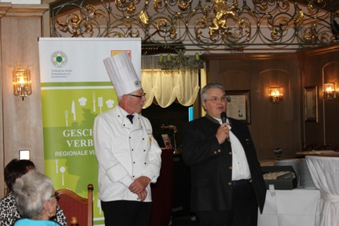
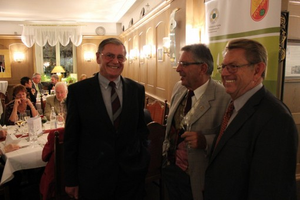
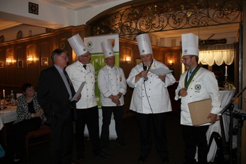
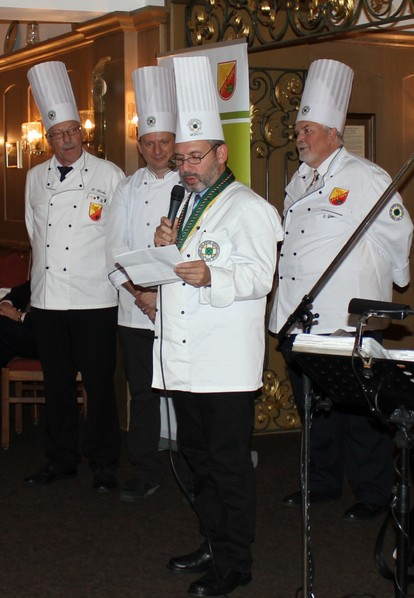

Kochclub Lörrach e.V.
1964
Vereinsdaten
: Gründung im Oktober 1964
Zur
Geschichte:
Der
Kochclub Lörrach e.V. ist ein Verein ausgebildeter Köche.
Gegründet
im Oktober 1964 in Lörrach.
Vereinslokale waren: Mayerhof in Lörrach, Gaststätte zum
Güterbahnhof, Brauerei Gaststätte Lasser, der schwarze Bären, unter der Leitung
von Kollegin Ilse Boja und seit 1993 das Restaurant Kranz in Schopfheimbei
Familie Baldassarre, da der Kollegenkreis aus dem Wiesental immer größer wurde.
Der Kochclub
leistet eine aktive Mitarbeit im Landesverband der Köche Baden-Württembergs (früher
ARGE Süd-West). So war im Jahre 2008 auch das Präsidium des Landesverbandes zu
Gast in der „Krone“ in Wiechs bei Familie Hauri. Vorstand Bernd Greiner
organisierte damals die Tagung mit großem Erfolg.
Als einer
von über 150 Zweigvereinen des VDK (Verein Deutscher Köche)
Pflegen
wir den fachlichen Meinungsaustausch, den Kontakte zu anderen Mitgliedern, die
Fortbildung in Seminaren, die Unterstützung der Jugend
und
pflegen die Traditionen des Berufsstandes.
In den
Anfangsjahren waren wir bekannt für unsere Plattenschauen in den Räumen der
WUFA in Lörrach, ein Highlight zur damaligen Zeit, mit sehr guten Besucherzahlen.
Dies war
der Beginn für die Teilnahme an großen Kochkunstausstellungen
in
Saarbrücken ,Straßburg und natürlich bei verschiedenen Internationalen
Kochkunstausstellungen IKA in Frankfurt.
Besondere
Erfolge waren dabei an Wettbewerben in Karlsruhe, Schwenningen und München
erzielt worden.
Ein
tolles Erlebnis war die Teilnahme am Wettbewerb um den goldenen Koch in
Klagenfurt. Hier musste die Mannschaft unter Mannschaftskapitän Jürgen Grether
an 2 Tagen jeweils 200 Menüs auf höchstem Niveau kochen, wo man den silbernen
Koch erreichte.
In den
siebziger Jahren hatten wir eine sehr aktive Jugend und Lehrlingsnachmittage
mit 10-15 Lehrlingen. Möglich gemacht wurde dies, durch die Unterstützung des
Landkreises und dem Kreiskrankenhaus Rheinfelden. Hier konnten wir über 10
Jahre die Küche vom damaligen Jugendwart und Küchenchef Manfred Mutter
benutzen.

Peter Henke & Manfred Mutter
Kräftig
unterstützt wurde er dabei von Harry Egger, der dieses Amt später von ihm
übernahm und erfolgreich mit Heinz Baumgartner fortsetzte.
In den
80er und 90er Jahren war die Zeit der großen Kochbälle.
Viele
Gäste ließen sich von den Köchen verwöhnen.
Veranstaltungsorte
waren Lörrach, Wehr und Schopfheim.
Auch
Ausflüge wurden unternommen. Beliebt waren die Reisen in die Weinregionen
Südtirol, Piemont und in die Pfalz.
Aktiv
waren wir auch an den Weinnachtmärkten in Schopfheim und am Stadtfest Lörrach.
Heute
kämpft der Kochclub, wie viele andere Vereine auch mit großen Problemen im
Nachwuchs. Immer weniger ausgebildete Köche sowie ein anderes
Freizeitverhalten, machen es immer schwerer genügend Ehrenamtliche Kollegen zu
finden.
Dennoch
besuchen wir regelmäßig Veranstaltungen wie den Laurentiustag,
Generalversammlungen
vom VKD und Delegiertentagungen des
Verbandes.
Auch
Partnerschaften zu den Kollegen der Aargauer Kochgilde ,Kochclub Raum-
Schaft St.
Blasien, und dem Kochclub Freiburg im Breisgau werden gepflegt.
In
unseren monatlichen Vereinsversammlung widmen wir uns verschiedenen Themen und
Vorträgen rund ums Kochen.
Wir
informieren in Seminaren über aktuelle Themen wie:
Lebensmittel
Unverträglichkeit, Hygienekontrollen oder neusten Trends aus dem
Lebensmittelbereich.
Besichtigt
wurden zuletzt die Betriebe Adler Bonndorf, Winzergenossenschaft
Efringen-Kirchen, Lachsräucherei NOWS, Fischhaus Freiburg/Schönau, Firma Hobart
Offenburg.
Auch ein
Besuch der IFAS Lörrach stand auf dem Plan, wo wir bei Kollege Martin Lehmann
Kürbisgerichte zubereiteten.
Zu Gast
im Kochclub Lörrach waren: Swiss Gourmet Lörrach, Firma Weck und Gewürze
Wiberg.
Stets
versuchen wir dabei unsere Jugend mit Einzubinden. Hier arbeiten wir mittlerweile
auch mit dem Dehoga - Landkreis Lörrach zusammen.
Für
Auszubildende gibt es die Möglichkeit zur Talentschmiede in
Villingen-Schwenningen. Spitzenköche kochen dabei mit den angehenden Jungköchen
exklusive Gerichte und geben praktische Tipps und Anregungen.
Der
Kochclub Lörrach hat heute ca. 50 Mitglieder.
Neue
Mitglieder sind jederzeit willkommen.
Sitzungstermin
ist jeder 1.Montag im Monat
im
Restaurant Kranz in Schopfheim
Die
Vereinsvorsitzenden des Kochclub Lörrach e.V. :
von
1964-1984 Kurt Waldhecker,2.Vorsitzender Peter Bauer
Von 1984
-1998 Manfred Mutter ,2. Vorsitzender Rolf Kallmann & Alfred Schmid
Von April
1998- 2002 Alfred Schmid
Von 2002
-2009 Bernd Greiner
Ab
September 2009- Peter Henke und Otto Grölle Kommissarisch
Von 2011
Peter Henke, 2. Vorsitzender Ulli Hub -2013
Von 2013
Peter Henke leider ohne 2 .Vorsitzenden
Verstorben:
Kurt Waldhecker / Bernd Greiner 29.08.2009 / Alfred Schmid 1.12.2011
.
Gründungsmitglieder:
Anwesend
an der 50 Jahr Feier

Birk,
Theo Geigy AG Grenzach
Bauer, Peter
Hotel Löwen Zell
Mössner, Manfred Gasthaus Schwanen Zell
Dörsch, Jürgen
Firma La. Roche Grenzach.
Leider
verstorben sind :
Arnold
Kurt - Sulzburg,
Franke
Rainer - Hebelhof Hertingen,
Glöckler
Manfred - Schopfheim,
Güdemann
Willi-Lörrach,
Hasenfratz
Erich - Mayerhof Lörrach,
Held
Martin – Schusterinsel Weil,
Mundinger
Kurt
Zimmermann
Hugo KBC Lörrach
Schich
Egon - Herten
Vogt
Hermann - Engel Lörrach
Walthecker
Kurt - Geigy AG
Wassmer
Walter - Drei König –Zell

